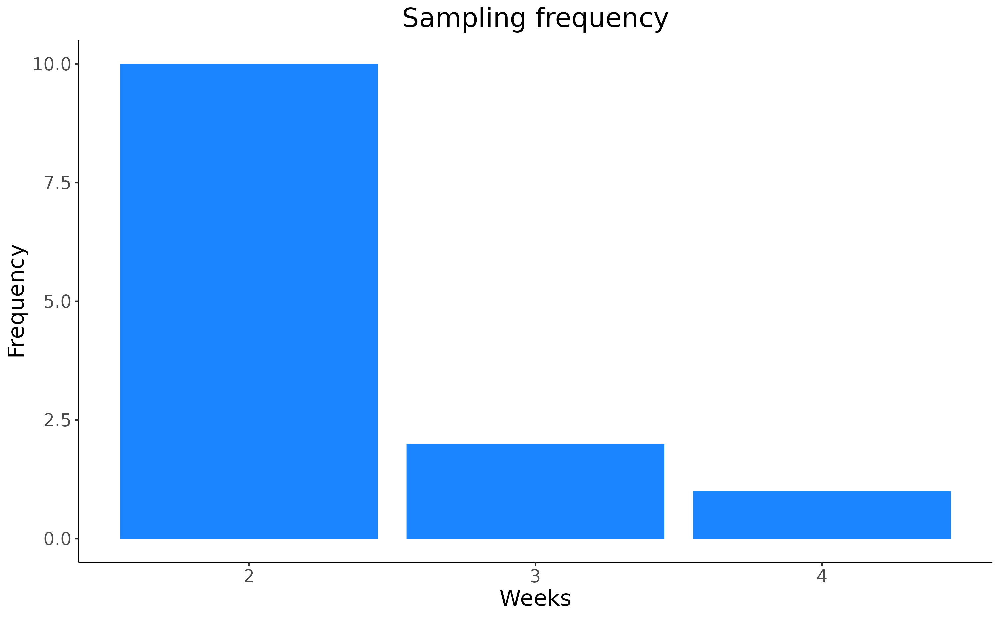
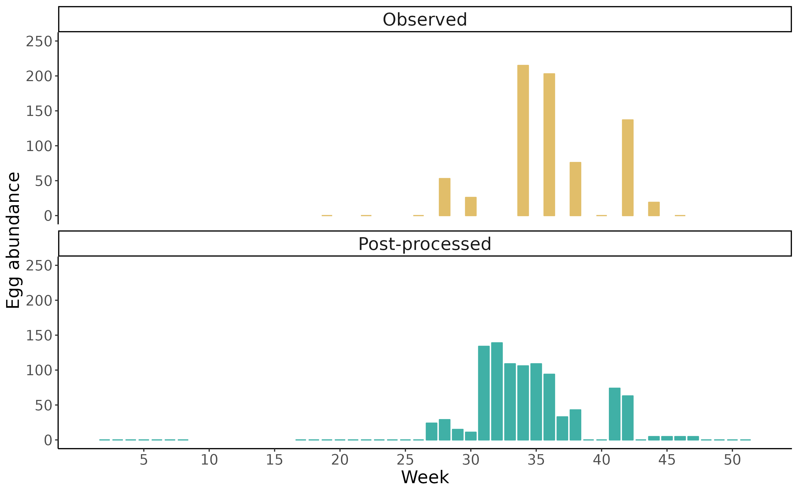

vignettes/dynamAedes_05_spreader.Rmd
dynamAedes_05_spreader.RmdThis vignette provides a comprehensive guide to the
spreader function available in the dynamAedes
package (Da Re et
al., 2022). This function performs a temporal downscaling of
observations captured by entomological traps (e.g. ovitraps, CDC-traps,
BG-sentinel) spreading the observed counts over the period of
activation of the traps.
In fact, stakeholders in charge of mosquito surveillance activities, such as public health agencies or research centres, adopt different monitoring schemes (i.e., size of the traps, length of the monitoring period, length of the activation period of the trap, etc.), depending on their needs, budget, and personnel. As a result, the monitoring schemes are highly heterogeneous between (but also within) countries (Jourdain et al., 2019, Miranda et al., 2022), restricting the temporal and spatial extent of each monitoring effort and producing gaps in data collection.
To account for this heterogeneity, we adopted some rules to
standardize the different observations and coded them into the
spreader function. In this example, we will use a toy
dataset reproducing the outcome of the yearly monitoring activity of
Aedes albopictus employing ovitraps.
Ovitraps are cheap and efficient tools consisting of a dark container
filled with water and a substrate where mosquitoes can lay their eggs.
Ovitraps are generally inspected on a weekly or biweekly basis,
depending on the local protocol adopted by the stakeholders. We chose
the week as the fundamental temporal unit, therefore, if the monitoring
period is extended beyond one week, the spreader function
will distribute randomly the observed number of eggs throughout the trap
activity period using a binomial draw with a probability equal to
1/n weeks of activation. This means that if a trap was active
for 2 weeks and collected 500 eggs, the observed 500 eggs would be
randomly assigned to each week with a probability p = 1/2,
resulting in, e.g. 256 eggs collected during the 1st week and 244
collected during the second.
Most of the monitoring efforts span from May (week 20) to October (week 40). Though there is some variability in the length of the monitoring period depending on the stakeholders’ resources and local protocols, the beginning and end of the monitoring year are often characterized by few or no observations. To handle missing or incomplete data and ensure consistency in analyzing the observed counts throughout the years, we modified the observed data according to the following assumptions:
For November, December, January and February, if no observations were provided, the egg count is assumed to be zero. However, if observations were available, and the weekly number of observations was calculated as the average of the observations for each month.
In March and April, if no observations were provided, the observed count is marked as “NA,” indicating missing or unavailable data, because under warm temperature conditions, for some mosquito species egg hatching might already occur in March (e.g.Petric et al., 2021).
We start with a simulated dataset of a seasonal ovitraps monitoring.
# Libraries
library(dplyr)
library(lubridate)
library(stringr)
library(dynamAedes)
library(ggplot2)
Sys.setlocale("LC_TIME", "en_GB.UTF-8")# [1] ""| year | setting_date | sampling_date | value | lifeStage | trap_type | species |
|---|---|---|---|---|---|---|
| 2014 | 2014-04-21 | 2014-05-12 | 0 | Eggs | Ovitraps | Aedes albopictus |
| 2014 | 2014-05-12 | 2014-06-02 | 0 | Eggs | Ovitraps | Aedes albopictus |
| 2014 | 2014-06-02 | 2014-06-30 | 0 | Eggs | Ovitraps | Aedes albopictus |
| 2014 | 2014-06-30 | 2014-07-14 | 53 | Eggs | Ovitraps | Aedes albopictus |
| 2014 | 2014-07-14 | 2014-07-28 | 26 | Eggs | Ovitraps | Aedes albopictus |
| 2014 | 2014-07-28 | 2014-08-11 | 273 | Eggs | Ovitraps | Aedes albopictus |
| 2014 | 2014-08-11 | 2014-08-25 | 215 | Eggs | Ovitraps | Aedes albopictus |
| 2014 | 2014-08-25 | 2014-09-08 | 203 | Eggs | Ovitraps | Aedes albopictus |
| 2014 | 2014-09-08 | 2014-09-22 | 76 | Eggs | Ovitraps | Aedes albopictus |
| 2014 | 2014-09-22 | 2014-10-06 | 0 | Eggs | Ovitraps | Aedes albopictus |
| 2014 | 2014-10-06 | 2014-10-20 | 137 | Eggs | Ovitraps | Aedes albopictus |
| 2014 | 2014-10-20 | 2014-11-03 | 19 | Eggs | Ovitraps | Aedes albopictus |
| 2014 | 2014-11-03 | 2014-11-17 | 0 | Eggs | Ovitraps | Aedes albopictus |
Where the setting_date represents the date when the trap
was activated and the sampling_date the date when the trap
was inspected and the number of eggs, displayed in the
value field, recorded.
Now we can measure the activation period, i.e. the sampling frequency, of the trap by counting the weeks between the installation of the trap and the sampling.
templatedf <- templatedf %>%
mutate(delta_week=lubridate::week(sampling_date) - lubridate::week(setting_date))
ggplot(templatedf, aes(x = delta_week)) +
geom_bar(fill="#1A85FF") +
scale_x_continuous(breaks = 1:4)+
labs(x = "Weeks", y="Frequency") +
ggtitle("Sampling frequency")+
theme_classic()+
theme(legend.background=element_blank(),
panel.grid = element_blank(),
legend.position = 'none',
plot.title = element_text(hjust = 0.5),
text = element_text(size=16),
strip.text = element_text(size=16),
legend.text = element_text(size=16,angle = 0), legend.title = element_text(size=16),
legend.key.size = unit(1.5, 'cm'))
To downscale the observed number of eggs on a weekly basis, we first need to add the missing dates to the observational data.frame. This means temporally extending the data.frame to cover the whole year.
mySeq <- tibble("date"=seq.Date(as.Date('2014-01-01'), as.Date('2014-12-31'), by="day")) %>%
mutate(temporalID = paste0(lubridate::year(date), "_" , lubridate::week(date)),
wday = wday(date) ) %>%
filter(wday ==2) %>%
select(date, temporalID)
#add temporal ID to the observational dataset and merge the missing dates
tmp <- templatedf %>%
mutate(temporalID=paste0(year, "_", stringr::str_pad(week(sampling_date), 2, pad="0"))) %>%
select(temporalID, value, delta_week) %>%
full_join(mySeq, by="temporalID" ) %>%
arrange(date)
tmp %>% print(n=52)# # A tibble: 52 × 4
# temporalID value delta_week date
# <chr> <dbl> <dbl> <date>
# 1 2014_1 NA NA 2014-01-06
# 2 2014_2 NA NA 2014-01-13
# 3 2014_3 NA NA 2014-01-20
# 4 2014_4 NA NA 2014-01-27
# 5 2014_5 NA NA 2014-02-03
# 6 2014_6 NA NA 2014-02-10
# 7 2014_7 NA NA 2014-02-17
# 8 2014_8 NA NA 2014-02-24
# 9 2014_9 NA NA 2014-03-03
# 10 2014_10 NA NA 2014-03-10
# 11 2014_11 NA NA 2014-03-17
# 12 2014_12 NA NA 2014-03-24
# 13 2014_13 NA NA 2014-03-31
# 14 2014_14 NA NA 2014-04-07
# 15 2014_15 NA NA 2014-04-14
# 16 2014_16 NA NA 2014-04-21
# 17 2014_17 NA NA 2014-04-28
# 18 2014_18 NA NA 2014-05-05
# 19 2014_19 0 3 2014-05-12
# 20 2014_20 NA NA 2014-05-19
# 21 2014_21 NA NA 2014-05-26
# 22 2014_22 0 3 2014-06-02
# 23 2014_23 NA NA 2014-06-09
# 24 2014_24 NA NA 2014-06-16
# 25 2014_25 NA NA 2014-06-23
# 26 2014_26 0 4 2014-06-30
# 27 2014_27 NA NA 2014-07-07
# 28 2014_28 53 2 2014-07-14
# 29 2014_29 NA NA 2014-07-21
# 30 2014_30 26 2 2014-07-28
# 31 2014_31 NA NA 2014-08-04
# 32 2014_32 273 2 2014-08-11
# 33 2014_33 NA NA 2014-08-18
# 34 2014_34 215 2 2014-08-25
# 35 2014_35 NA NA 2014-09-01
# 36 2014_36 203 2 2014-09-08
# 37 2014_37 NA NA 2014-09-15
# 38 2014_38 76 2 2014-09-22
# 39 2014_39 NA NA 2014-09-29
# 40 2014_40 0 2 2014-10-06
# 41 2014_41 NA NA 2014-10-13
# 42 2014_42 137 2 2014-10-20
# 43 2014_43 NA NA 2014-10-27
# 44 2014_44 19 2 2014-11-03
# 45 2014_45 NA NA 2014-11-10
# 46 2014_46 0 2 2014-11-17
# 47 2014_47 NA NA 2014-11-24
# 48 2014_48 NA NA 2014-12-01
# 49 2014_49 NA NA 2014-12-08
# 50 2014_50 NA NA 2014-12-15
# 51 2014_51 NA NA 2014-12-22
# 52 2014_52 NA NA 2014-12-29spreader function
We can now apply the spreader function, specifying the
required arguments and observing the temporal downscaling performed on
the value_adj field. The parameter
counter.field is set to consider the
delta_week column as a specification for the length (in
weeks) of each sampling.
# apply spreader function
ex <- spreader(mydf = tmp,
date.field = "date",
value.field = "value",
counter.field = "delta_week",
seed=123)
ex %>% print(n=52)# # A tibble: 52 × 5
# temporalID value delta_week date value_adj
# <chr> <dbl> <dbl> <date> <dbl>
# 1 2014_1 NA NA 2014-01-06 0
# 2 2014_2 NA NA 2014-01-13 0
# 3 2014_3 NA NA 2014-01-20 0
# 4 2014_4 NA NA 2014-01-27 0
# 5 2014_5 NA NA 2014-02-03 0
# 6 2014_6 NA NA 2014-02-10 0
# 7 2014_7 NA NA 2014-02-17 0
# 8 2014_8 NA NA 2014-02-24 0
# 9 2014_9 NA NA 2014-03-03 NA
# 10 2014_10 NA NA 2014-03-10 NA
# 11 2014_11 NA NA 2014-03-17 NA
# 12 2014_12 NA NA 2014-03-24 NA
# 13 2014_13 NA NA 2014-03-31 NA
# 14 2014_14 NA NA 2014-04-07 NA
# 15 2014_15 NA NA 2014-04-14 NA
# 16 2014_16 NA NA 2014-04-21 NA
# 17 2014_17 NA NA 2014-04-28 0
# 18 2014_18 NA NA 2014-05-05 0
# 19 2014_19 0 3 2014-05-12 0
# 20 2014_20 NA NA 2014-05-19 0
# 21 2014_21 NA NA 2014-05-26 0
# 22 2014_22 0 3 2014-06-02 0
# 23 2014_23 NA NA 2014-06-09 0
# 24 2014_24 NA NA 2014-06-16 0
# 25 2014_25 NA NA 2014-06-23 0
# 26 2014_26 0 4 2014-06-30 0
# 27 2014_27 NA NA 2014-07-07 24
# 28 2014_28 53 2 2014-07-14 29
# 29 2014_29 NA NA 2014-07-21 15
# 30 2014_30 26 2 2014-07-28 11
# 31 2014_31 NA NA 2014-08-04 134
# 32 2014_32 273 2 2014-08-11 139
# 33 2014_33 NA NA 2014-08-18 109
# 34 2014_34 215 2 2014-08-25 106
# 35 2014_35 NA NA 2014-09-01 109
# 36 2014_36 203 2 2014-09-08 94
# 37 2014_37 NA NA 2014-09-15 33
# 38 2014_38 76 2 2014-09-22 43
# 39 2014_39 NA NA 2014-09-29 0
# 40 2014_40 0 2 2014-10-06 0
# 41 2014_41 NA NA 2014-10-13 74
# 42 2014_42 137 2 2014-10-20 63
# 43 2014_43 NA NA 2014-10-27 0
# 44 2014_44 19 2 2014-11-03 4.75
# 45 2014_45 NA NA 2014-11-10 4.75
# 46 2014_46 0 2 2014-11-17 4.75
# 47 2014_47 NA NA 2014-11-24 4.75
# 48 2014_48 NA NA 2014-12-01 0
# 49 2014_49 NA NA 2014-12-08 0
# 50 2014_50 NA NA 2014-12-15 0
# 51 2014_51 NA NA 2014-12-22 0
# 52 2014_52 NA NA 2014-12-29 0To visualize the effect of the temporal downscaling:
cols <- c("Observed" = "#E1BE6A", "Post-processed" = "#40B0A6" )
dplyr::bind_rows(templatedf %>%
mutate(week = lubridate::week(sampling_date),
field = "Observed") %>%
select(week, value, field),
ex %>%
mutate(week = lubridate::week(date),
field = "Post-processed") %>%
select(week, value_adj, field) %>%
dplyr::rename( value = value_adj)
)%>%
ggplot(aes(week, value, col=field, fill=field)) +
geom_bar(position="dodge", stat="identity", size=0.5, width = 0.8)+
scale_color_manual(values = cols)+
scale_fill_manual(values = cols)+
ylim(0, 250)+
facet_wrap(~field,nrow=2)+
labs(x="Week", y="Egg abundance" )+
scale_x_continuous( breaks = seq(5, 50, by =5), limits=c(1, 52))+
theme_classic()+
theme(legend.background=element_blank(),
panel.grid = element_blank(),
legend.position = 'none',
text = element_text(size=16),
strip.text = element_text(size=16),
legend.text = element_text(size=16,angle = 0), legend.title = element_text(size=16),
legend.key.size = unit(1.5, 'cm'))
Firstly, we can note that the new observations consist of zeros for
weeks 1-8 (January and February). From March up to mid-April
value_adj = NA as no actual data was recorded. Sampling
started on week 17 and the trap was collected 2 weeks later (week 19)
with no eggs collected (value=0). Thus value_adj = 0 for
the three considered weeks. The first observation different from 0
occurred on week 28 when 53 eggs were collected over two weeks. Thus the
observation was spread on weeks 27 and 28 with value_adj
equal to 24 and 29 respectively (24+29 = 53).
We remark that observations are reallocated randomly; the spreader function allows us to specify the seed in the arguments, so it is possible to recreate the same new dataset using the same seed.
Finally, the monitoring activity ended on week 46 (mid-November), so
we averaged those samplings and spread them over the month. As no data
was recorded in December, value_adj is set equal to
zero.
In this section we apply the spreader function with no
specification for the counter.field argument.
# apply spreader function
ex_noSampl <- spreader(mydf = tmp,
date.field = "date",
value.field = "value",
counter.field = NULL,
seed=123)The output is the same as the one obtained previously since we used the same seed value. This is even more clear from the following plot: